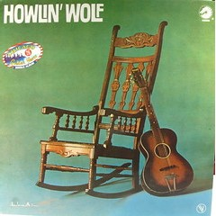
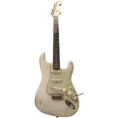
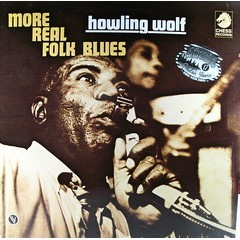
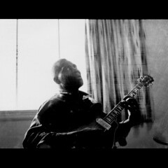
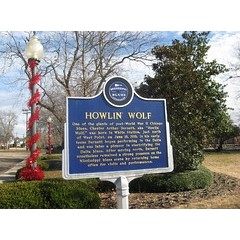
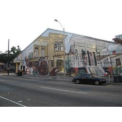

Above is the cover of the album Howlin' Wolf, which was released in 1962. This was Howlin' Wolf's second album and included 12 previously released singles from 1960 through 1962. It is often referred to as "The Rocking Chair Album."
Photo Credit:
Kevin Dooley,
Howlin Wolf,
CC BY 2.0

Howlin' Wolf was often seen playing the exact 1963 Fender Stratocaster pictured above. This picture was taken in 2018 in the Rock and Roll Hall of Fame in Cleveland, OH, where the guitar was displayed at the time.
Photo Credit:
Claude Humbert,
Howlin'
Wolf's 1963 Fender Stratocaster (Rock and Roll Hall of Fame, Cleveland, OH),
CC BY-SA 4.0

Above is the cover of the album More Real Folk Blues, which was released in 1967. Although this is Howlin' Wolf's sixth album, this album includes some of Howlin' Wolf's earliest recorded songs from 1953 through 1956. This album was a companion to The Real Folk Blues album, which was released in 1965.
Photo Credit:
Kevin Dooley,
Howlin Wolf - More Real
Fold Blues,
CC BY 2.0

The polaroid of Howlin' Wolf pictured above was taken during an interview in a Toronto hotel room in 1970. Due to a faulty camera, this was the only shot from the interview that the interviewer, known as "The Oldie", was able to salvage. "The Oldie" jokingly commented that the flaws in the shot "give it a kind of funky grit."
Photo Credit:
Still The Oldie,
Howlin' Wolf 1970
(Via Faulty Polaroid),
CC BY-NC-ND
2.0

The Mississippi Blues Commission erected the historical marker pictured above dedicated to Howlin' Wolf in 2007. It is located in West Point, Mississippi and can be found near 510 East Broad Street.
Photo Credit:
Joseph,
Howlin' Wolf Historic
Marker,
CC BY-NC-SA
2.0

Brothers Jack and Jeff Groetsch opened a music venue called The Howlin' Wolf in the Fat City section of Metairie, Louisiana in 1988. Since then, the venue has been relocated twice and changed ownership. Above is how it appears currently at 907 S. Peters St., New Orleans, LA.
Photo Credit:
Chris LeCroy,
Howlin Wolf
II NOLA,
CC BY-SA 2.0